On this page
- Quick verdict
- What a GEO agency does
- Do they practice it?
- How I picked
- At a glance
- 1. Fourward
- 2. iPullRank
- 3. Siege Media
- 4. First Page Sage
- 5. Graphite
- 6. Omniscient Digital
- 7. Go Fish Digital
- 8. Seer Interactive
- 9. WebFX
- 10. Directive
- 11. Victorious
- 12. Grow and Convert
- Also worth a look
- What they charge
- How to choose
- FAQs
- Sources
GEO is on almost every SEO agency's menu now. A few have rebuilt their service around AI search. Many have changed the headline and kept the old retainer. The hard part is telling them apart before you sign anything.
I work on AI visibility for B2B SaaS, and I built two free tools for it, so I went through every agency below the way a buyer would: their GEO page, their pricing, and the AI search results they publish on their own site, on 19 October 2026. I also ran each agency's own website through our AI crawler checker, to see who practices what they sell. Here are the 12 worth a call. Ours is first, and the other 11 are ordered by how widely they're known for this work and how much proof they publish.
I work at Fourward, which publishes this guide. One entry is ours, listed first. Every other fact links to that agency's own website, checked on 19 October 2026. No agency paid to be included or knew I was writing this.
- Only six of the eleven outside agencies publish a price: WebFX (from $3,000 a month), First Page Sage ($6,000–$12,000 a month), Go Fish Digital ($8,000+ a month), Grow and Convert (from $10,000 a month), Omniscient Digital (from $120,000 a year) and iPullRank (bands from $30K).
- Every agency site I checked lets all 20 AI crawlers in through robots.txt. Just over half publish an llms.txt file.
- Most published GEO results are percentages from the agency's own tracking, and some are anonymous. Ask for the prompt list and the tool behind any number.
- A complete GEO plan covers four layers: readable, understood, worth citing and mentioned elsewhere. Ask which ones an agency actually does.
What a GEO agency should actually do
Generative engine optimization (GEO) means getting your brand named and cited when someone asks ChatGPT, Perplexity, Gemini, Claude, Copilot or Google's AI Overviews and AI Mode a question your product answers. You'll also see it called AEO (answer engine optimization) or AI search optimization. The agencies below use all three names for roughly the same work. If you'd rather run it in-house, our GEO guide for B2B SaaS lays out the steps.
When I read an agency's GEO plan, I look for four layers. If a plan skips one, the others carry less weight.
- Mentioned elsewhereOther sites AI engines trust talk about you.PR, reviews, lists, communities
- Worth citingYour pages answer buying questions better than anyone's.Comparison, pricing and use-case pages
- UnderstoodMachines know who you are and what you sell.Structured data, entity profiles
- ReadableAI crawlers can reach and read your pages.robots.txt, firewall, rendering
The bottom two layers are technical and fast to fix. The top two take months, and they're where most of the citations come from. That's also where agencies differ most, so it's the first thing to ask about.
Do these agencies practice what they sell?
A GEO agency's own website is its best sample. So on 19 October 2026 I ran all 19 agency sites I researched through our AI crawler checker. It reads each site's robots.txt the way crawlers do, tests 20 AI bots, and checks for an llms.txt file. Here are the twelve in this guide:
| Agency | AI bots allowed in robots.txt | llms.txt | Free AI tool or audit |
|---|---|---|---|
| Fourward | 20 of 20 | Yes | AI visibility check, crawler checker |
| iPullRank | 20 of 20 | No | Yes, free tools |
| Siege Media | 20 of 20 | No | Free assessment |
| First Page Sage | 20 of 20 | No | None found |
| Graphite | 20 of 20 | No | None found |
| Omniscient Digital | 20 of 20 | Yes | AI bot access tool |
| Go Fish Digital | 20 of 20 | Yes | Free AI visibility audit |
| Seer Interactive | 20 of 20 | Yes | Free ChatGPT tracker |
| WebFX | 20 of 20 | Yes | AI Overview checker (SEO.com) |
| Directive | 20 of 20 | Yes | Intro call |
| Victorious | 20 of 20 | No | Call or assessment |
| Grow and Convert | 20 of 20 | No | Free AI rankings (Traqer) |
Two things stood out. Nobody blocks AI bots in robots.txt, which is the bare minimum for this business. And llms.txt is split almost down the middle: 11 of the 19 agencies publish one. It's optional and Google says it doesn't use it, so a missing file isn't a mark against anyone. It just shows who's experimenting. I added one to our own site while writing this.
Our checker also loads each homepage as GPTBot, OAI-SearchBot, ClaudeBot and PerplexityBot. Five of the 19 sites rejected at least one of those requests at the firewall. That's often a rule aimed at fake bots rather than the real ones, so I'm not naming anyone. But it's worth checking on your own site.
Every agency here lets AI crawlers in through robots.txt. The difference between them is in the top two layers: the content and off-site work that actually earns citations.
How I picked these agencies
I started with 19 agencies that sell GEO, AEO or AI search optimization and kept the ones that met most of these:
- A real GEO service page that explains the work, not just a new headline on an SEO page.
- AI search results on their own site, such as citations, AI visibility or AI referral traffic, not only SEO wins.
- A named method or tooling for AI search, so you can judge how they think.
- Recognition for this work: how often they appear in the 2026 rankings that already show up for this search.
I used only each agency's own website for facts. No review sites, no paid placements. The eight agencies that didn't make the main list are under also worth a look.
GEO agencies at a glance
The same five questions for every agency. Scroll the table sideways on a phone.
| Agency | Best for | Published pricing | Free option | Method |
|---|---|---|---|---|
| Fourward | GEO with the rest of your marketing | Priced in a written plan | Free audit and two free tools | Call, audit, written plan |
| iPullRank | Deep technical AI search work | Bands from $30K | Free AI search tools | Relevance Engineering |
| Siege Media | Citations through content and PR | Not published | Free assessment | Foundation, Activation, Compound |
| First Page Sage | Lists, databases and reviews | $6,000–$12,000 a month, month to month | None found | Six elements of GEO |
| Graphite | Research-led AEO for tech brands | Not published | None found | Five Percent research |
| Omniscient Digital | B2B SaaS organic and AI search | Full service from $120,000 a year | AI bot access tool | Four-step AEO method |
| Go Fish Digital | Patent-based content scoring | $8,000+ a month | Free AI visibility audit | Barracuda platform |
| Seer Interactive | Enterprise, diagnostic first | Not published | Free ChatGPT tracker | Measure, analyze, test, train |
| WebFX | A price you can budget today | From $3,000 a month | AI Overview checker (SEO.com) | OmniSEO platform |
| Directive | B2B tech, GEO with paid media | Not published | Intro call | Five-step GEO process |
| Victorious | GEO as an extension of SEO | Not published | Call or assessment | Seven-step SEO and GEO plan |
| Grow and Convert | B2B SaaS bottom-funnel content | From $10,000 a month | Free AI rankings (Traqer) | Prioritized GEO |
1. Fourward
Best for B2B SaaS teams that want GEO run by the same senior team as their SEO, brand, PR and lifecycle.

Fourward runs GEO for B2B SaaS as part of one plan with SEO, content, PR and lifecycle, led by one senior team. That matters for AI search: the pages AI cites, the reviews and press it trusts, and the comparisons buyers ask about all get built together. The team also built two free AI search tools, an AI visibility check and an AI crawler checker.
- Who it's forB2B SaaS companies that want AI search handled with the rest of their marketing.
- What we doTechnical SEO, GEO and AEO, comparison pages, structured data and entity work, and PR, reviews and the third-party pages AI answers lean on.
- PricingSet in a written plan after a free audit, as a monthly partnership or a fixed project.
- Free optionA free AI visibility check, a free AI crawler checker and, for a limited time, a free SEO, AEO and GEO audit.
- How it startsA call, a free audit, then a written plan with the price within three working days.
My take The pick if you want GEO done as part of your whole marketing plan, not bolted on to an SEO retainer. You get the technical fixes, the pages worth citing and the off-site mentions from one team, with a written plan before you sign. Book the free audit.
2. iPullRank
Best for Enterprise and mid-market brands that want the deepest technical take on AI search.
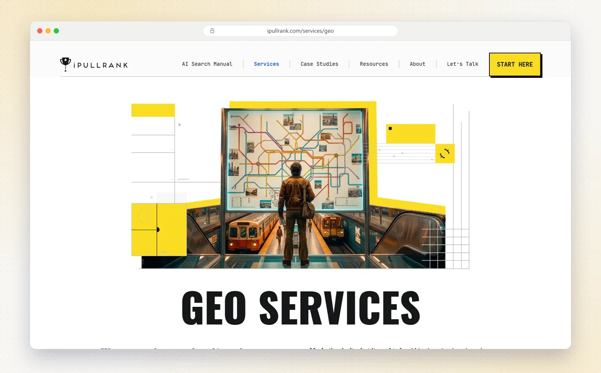
iPullRank, led by founder Mike King, treats GEO as part of what it calls Relevance Engineering: making content easy for AI systems to retrieve, quote and measure. Its GEO page also admits that nobody has fully figured GEO out yet. I trust that more than the guarantees you'll see elsewhere.
- Who it's forThree tiers on its AI search page: Emerging for startups, Growth for mid-market and challenger brands, Elite for Fortune 500 and global enterprises.
- What they doAI visibility baselines, prompt and topic strategy, keyword portfolios built from simulated AI query fan-out, content audits, a technical relevance audit and an AI search roadmap. Sold as a 3-month sprint or a 12-month program.
- PricingPublished bands: $30K–$150K (Emerging), $150K–$500K (Growth) and $500K+ (Elite). The page doesn't say whether that's per year or per engagement.
- Proof on their siteA telecom case study reports AI Overview inclusions rising from 712 to 3,235.
- Free optionFree tools with no sign-up wall, including Qforia for simulating AI Mode fan-out queries (it needs your own Gemini API key), plus a readiness quiz that asks for your name and email.
My take If your team wants to understand why AI cites what it cites, nobody explains it better. The price bands put it out of reach for many early-stage SaaS budgets, even though its entry tier is aimed at startups.
3. Siege Media
Best for Brands that want citations earned through content, digital PR and communities.
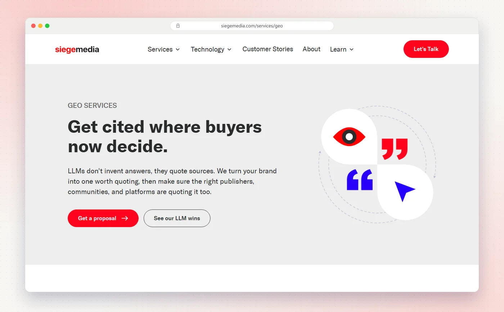
Siege Media spent more than a decade as a content marketing agency and now calls itself a full-service GEO agency. Its founder, Ross Hudgens, has written a book on generative engine optimization with Wiley. Its pitch is simple: AI engines quote sources rather than invent answers, so Siege makes you worth quoting and then gets publishers, communities and other platforms to quote you.
- Who it's forSaaS, fintech, ecommerce, cybersecurity, education and travel brands that already invest in SEO or content and will commit for six months or more.
- What they doResearch reports and digital PR, comparison and pricing pages, Reddit and community presence, placements in editorial roundups, content refreshes and interactive tools. Reported monthly as LLM share of voice, citations and AI referral traffic.
- PricingNot published for GEO.
- Proof on their siteZendesk appears in 98% of the industry queries it tracks, and Grow Therapy's LLM visibility rose from 11% to 43%, measured in Peec AI.
- Free optionA free assessment request.
My take Siege is the pick if you believe, as I do, that most citations are won off your own site. Its named results, for Zendesk and Grow Therapy, are some of the most specific in this list.
4. First Page Sage
Best for Companies that want GEO built around ranking lists, databases and reviews.
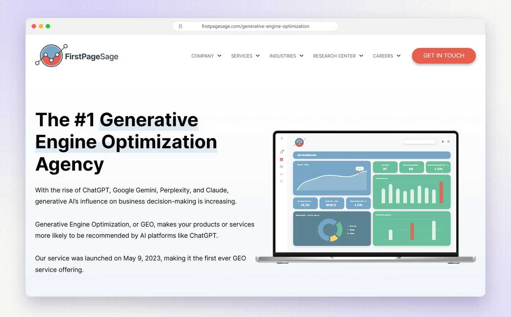
First Page Sage says it launched its GEO service on 9 May 2023, and calls it the first GEO service offered anywhere. Its approach leans on getting you onto the lists, databases and review sites that AI engines read, alongside authority on Google and Bing.
- Who it's forMore than 150 clients, mostly midsized, across B2B SaaS, cybersecurity, fintech, healthcare, manufacturing and other industries.
- What they doSix elements: list creation and optimization, database inclusion, website authority on Google and Bing, online review management, publicizing achievements and social sentiment monitoring. A newer agentic search service prepares sites for AI agents.
- Pricing$6,000–$12,000 a month on month-to-month terms, per its own 2026 GEO pricing report, which also puts the median retainer across agencies at $6,850 a month.
- Proof on their siteAnonymized case studies, such as a New York plastic surgeon whose AI recommendation share rose from 11% to over 60% across 31 queries.
- Free optionNone found.
My take Month-to-month terms and a published range are rare in this list and worth a lot. Its published GEO cases are anonymized, so ask for a named reference in your category.
5. Graphite
Best for Fast-growing tech brands that want research-led AEO tied to sign-ups.
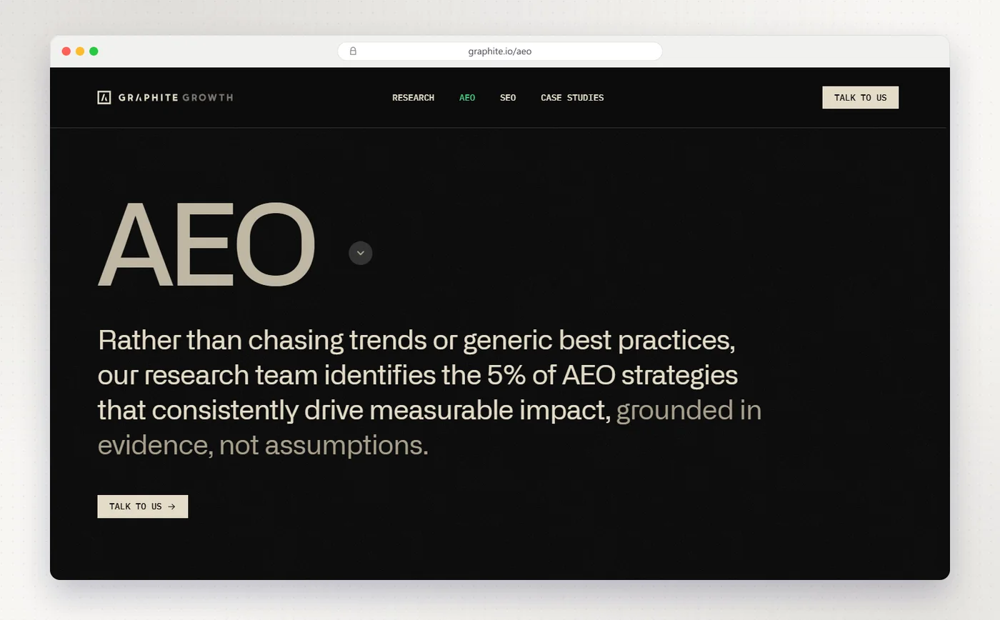
Graphite, led by founder and CEO Ethan Smith, runs a research hub called Five Percent and pitches AEO as finding the small share of tactics that reliably work. Its case-study page lists clients including Webflow, n8n, Notion and Descript.
- Who it's forAmbitious companies, mostly in tech and SaaS, such as Webflow, n8n and Notion.
- What they doPrompt research from sales calls, Reddit and help-center questions, citation-ready content on and off your site, brand sentiment work, technical AEO, citation tracking, and an off-site and Reddit strategy.
- PricingAEO pricing isn't published. Its SEO engagements have a 12-month minimum.
- Proof on their siteFor Webflow, LLM share of voice rose from 33% to 64%, and the share of sign-ups coming from LLMs doubled from 4% to 8%.
- Free optionNone found.
My take The Webflow case study is the clearest line I found from AI visibility to sign-ups. Graphite publishes a lot of research, so you can judge its thinking before the first call.
6. Omniscient Digital
Best for B2B SaaS teams that want organic growth and AI search from one specialist.
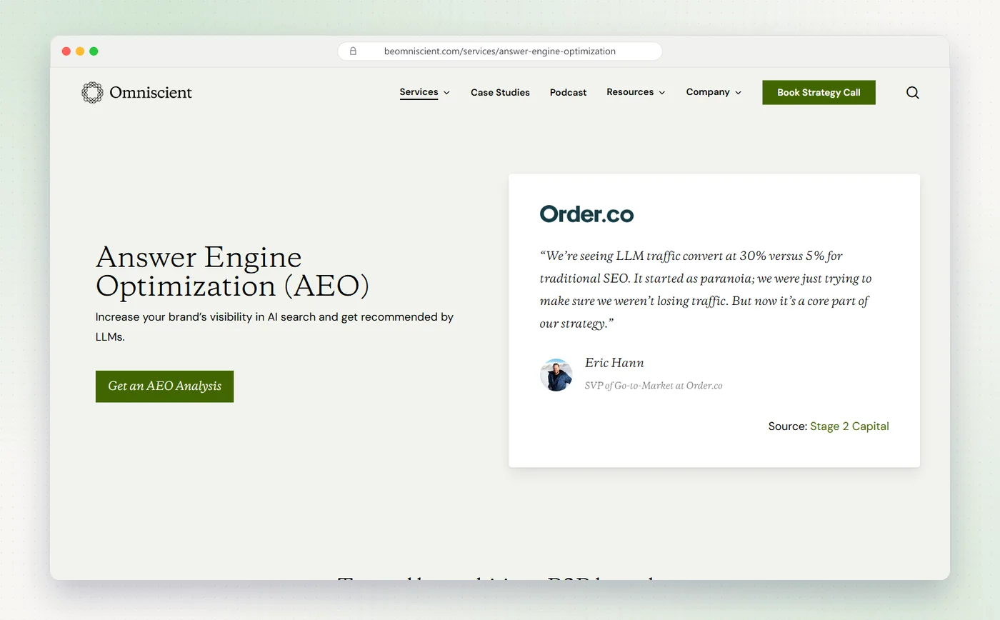
Omniscient Digital works almost entirely with B2B software companies, and only on organic growth. Its AEO service starts from real buyer demand and treats AI visibility as a result of genuine presence in your market, not of schema tweaks.
- Who it's forB2B SaaS and tech companies: VC-backed startups, scale-ups, mid-market and enterprise. It typically doesn't take ecommerce or local clients.
- What they doModel buyer demand, win the consideration set, shape the sources AI answers draw on, and measure influence against pipeline, plus technical AEO and experiments from its own R&D team.
- PricingFull-service engagements typically start at $120,000 a year and average $250,000–$500,000 a year, per its FAQ.
- Proof on their siteConvert's prompt visibility rose from 31% to 55% and its citation share from 15% to 35% in 60 days.
- Free optionAn AI bot access analyzer that checks whether AI crawlers can reach a page.
My take A published price floor makes budgeting easy. If you're B2B SaaS with product-market fit and organic is your main channel, it belongs on your shortlist.
7. Go Fish Digital
Best for Technical teams that want GEO grounded in search patents and content scoring.
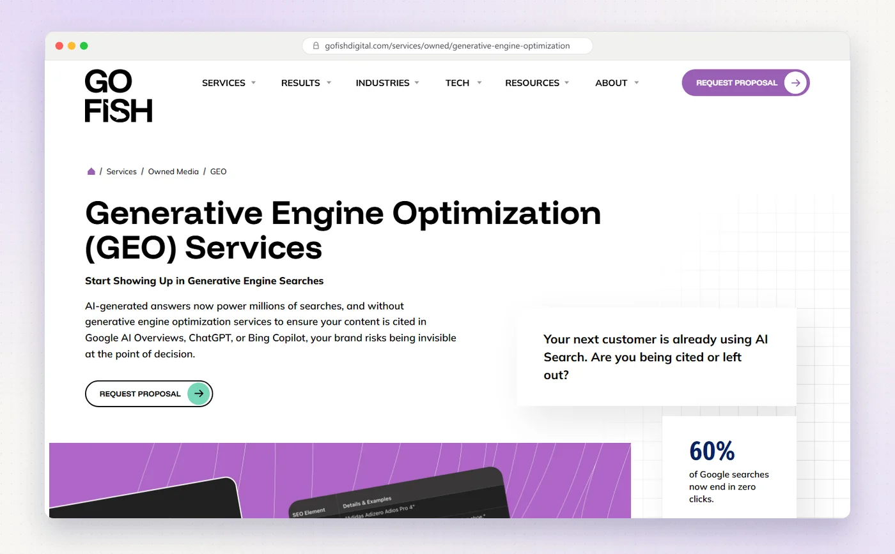
Go Fish Digital, founded in 2005 and based in Raleigh, North Carolina, builds its GEO method on Google patents and its own tools. It scores your content against AI-generated answers and works on three things: your semantic footprint, the density of facts on your pages, and your structured data.
- Who it's forEcommerce, SaaS, B2B and enterprise, legal, higher education, healthcare and financial services.
- What they doSemantic content audits, page and passage-level optimization for AI Overviews and ChatGPT, schema and IndexNow, and digital PR for brand citations, using its Barracuda platform and an AI Overview analyzer.
- PricingNot on its service pages, but its own list of SaaS GEO agencies puts it at $8,000+ a month.
- Proof on their siteOn its own website, it reports monthly AI-driven traffic up 43% and conversions up 83% after applying its method.
- Free optionA free AI visibility audit, delivered as a 30-minute session.
My take The most engineering-minded agency here after iPullRank. Its clearest GEO proof is on its own website, so ask for a client example in your category.
8. Seer Interactive
Best for Enterprise brands that want research-led GEO without a long first contract.
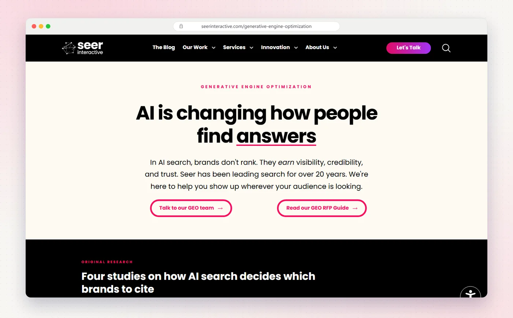
Seer Interactive, founded in Philadelphia in 2002, treats GEO as a separate channel that works alongside SEO. It runs and publishes its own AI search experiments, and it offers a diagnostic phase first, so you don't need a 12-month commitment to start.
- Who it's forLarge brands. It lists more than 130 enterprise clients.
- What they doPrompt development and tracking, AI citation and source analysis, AI log file analysis, user journey analysis, a structured test framework and GEO education sessions. It partners with Scrunch for visibility tracking.
- PricingNot published.
- Proof on their siteFor Trex, owned AI Overview references grew 2.8 times.
- Free optionSeerSonar, a free public tracker of ChatGPT volatility.
My take The safest enterprise pick if your in-house team needs teaching as well as doing. Starting with a diagnostic lowers the risk of a big contract.
9. WebFX
Best for Mid-sized companies that want a published GEO price and a built-in tracking platform.
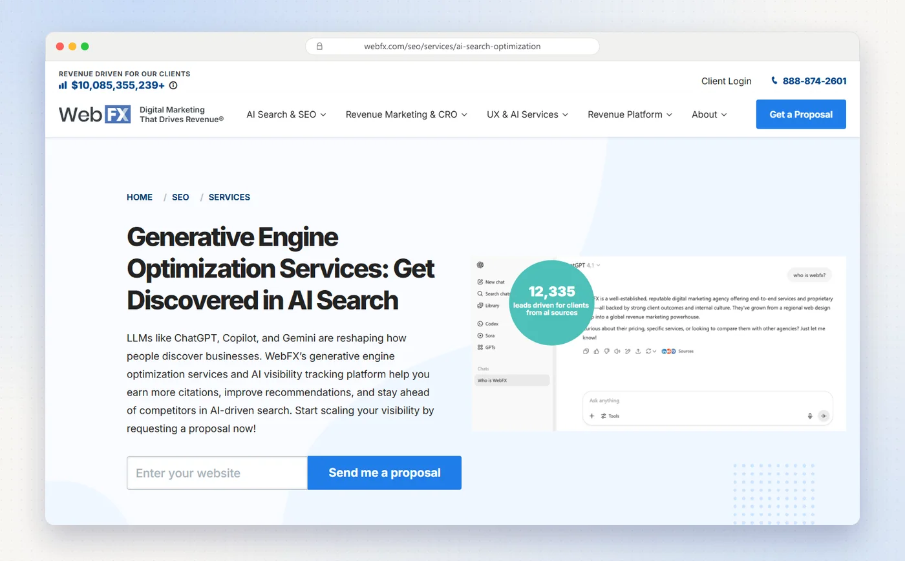
WebFX, based in Harrisburg, Pennsylvania, launched AI SEO services in October 2024 and sells GEO together with its own AI visibility platform, OmniSEO. It's one of only two agencies here, with Powered by Search, that publish a full GEO price table.
- Who it's forBusinesses that already run an SEO program, from local service providers to multi-country brands.
- What they doGEO and SEO audits, AI search strategy, content, citations and third-party mentions, link building, and OmniSEO tracking across Google AI Overviews and AI Mode, ChatGPT, Perplexity, Gemini, Claude, Copilot and Meta AI.
- PricingFrom $3,000 a month on a six-month commitment, with published tiers up to $68,250 a month.
- Proof on their siteThompson Tractor saw traffic from generative AI sources rise 586%.
- Free optionA free Google AI Overview checker on its sister site SEO.com (email needed). Nothing free for ChatGPT or Perplexity visibility.
My take If you need a number for this quarter's budget, WebFX gives you one. Tier names differ between its pricing pages, so confirm what your tier includes in writing.
10. Directive
Best for Series A to IPO B2B tech companies that want GEO inside a performance marketing program.
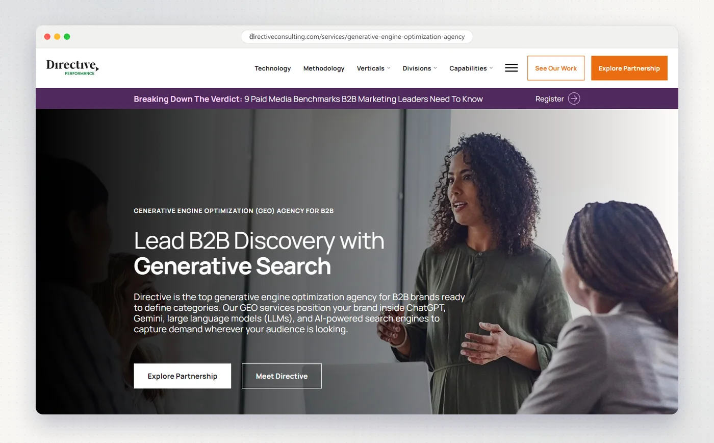
Directive, founded in 2013, is a B2B marketing agency, mainly for tech and SaaS, that runs GEO, AEO and LLM visibility work alongside paid media and RevOps, inside its wider DiscoverabilityOS method.
- Who it's forB2B technology and SaaS companies, from Series A to IPO.
- What they doEntity and topic mapping, AI content optimization, structured data, LLM visibility audits and LLM-ready content, with measurement tied to pipeline.
- PricingNot published.
- Proof on their siteCase Status went from no LLM presence to leading across 39+ tracked prompts in nine months, with demo bookings 20% above forecast.
- Free optionAn intro call.
My take Directive suits teams that already buy paid media from an agency and want GEO in the same plan. Ask how its GEO, AEO and LLM services differ, because its own pages define them differently.
11. Victorious
Best for Mid-market and enterprise companies that want GEO run as an extension of SEO.
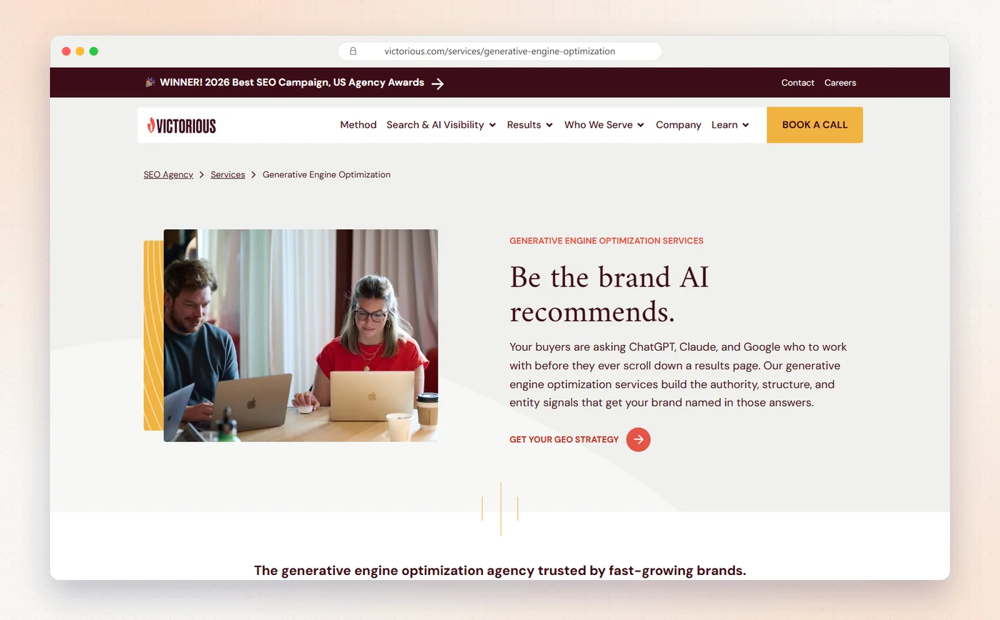
Victorious, founded in 2013 in San Francisco, sees GEO as an extension of SEO rather than a separate strategy. Its GEO service works on the authority, structure and entity signals that get a brand named in AI answers, in 90-day sprints.
- Who it's forMid-market and enterprise companies with at least $10 million in ARR, across law, SaaS, ecommerce, finance, higher education and healthcare.
- What they doAudit and strategy, technical optimization, query and intent research, content formatted for extraction, structured data and ongoing monitoring, run by a core team of strategist, content lead, technical specialist and account manager.
- PricingNot published. It scopes after an audit, and its booking form's budget options start at $5,000–$10,000 a month.
- Proof on their siteInstant Financial's AI Overview citations grew 15 times over the campaign.
- Free optionA call or assessment request.
My take A sensible choice if your SEO program is already strong and you want AI search added without a second agency. The $10 million ARR line suggests it isn't aimed at early-stage SaaS.
12. Grow and Convert
Best for B2B SaaS companies that want the bottom-funnel content AI recommends.
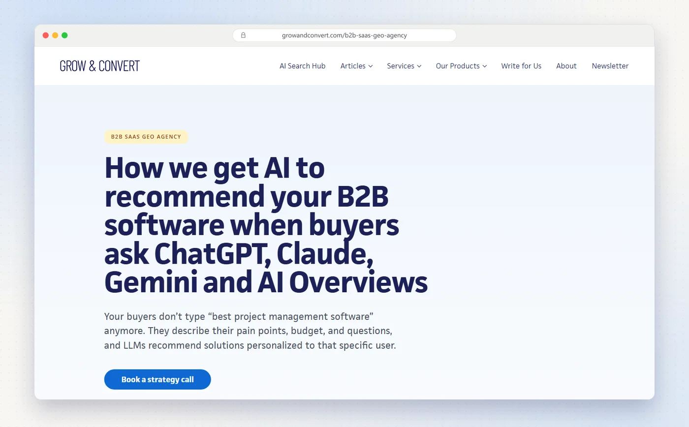
Grow and Convert is a content agency with a GEO service built for B2B SaaS. It interviews your sales and product teams, writes from those interviews, and does outreach to get you onto the pages AI answers cite, including Reddit.
- Who it's forCMOs and VPs of Marketing at B2B SaaS companies, from 20-person startups to public companies like ServiceTitan.
- What they doBuyer and topic research, interview-based content, AI citation outreach, link building, technical SEO, and measurement in GA4 or HubSpot, with its own tracker, Traqer.
- PricingFrom $10,000 a month, per its SEO and GEO service page.
- Proof on their siteAI now mentions Toro TMS across 75% of the topics it tracks.
- Free optionFree AI brand visibility rankings on its Traqer site.
My take The most B2B SaaS-specific GEO offer here, and one of only four with a published price. It's content-led, so pair it with technical help if your site has crawl problems.
Also worth a look
These agencies also sell GEO and publish real detail about it. They missed the main list on one or more of my criteria, not on quality.
- Powered by Search: GEO for B2B companies with long sales cycles, from $9,000 a month ($7,500 on its quarterly option), using its RAISE framework.
- NoGood: AEO for startups up to Fortune 100 brands, with an average retainer above $20,000 a month across all its services.
- Single Grain: GEO with digital PR and what it calls search everywhere optimization, plus a free AEO audit.
- Brainlabs: AI visibility work across your website, owned channels and earned presence, starting with a 90-day plan.
- Intero Digital: a GEO framework called Intero GRO, and a free AI competitive overview for B2B and B2C brands with $2M+ in revenue.
- Avenue Z: AEO for fintech, B2B software and emerging tech, plus consumer and ecommerce brands, with an AEO readiness quiz.
- Exposure Ninja: UK-based AI search optimisation, for small firms up to FTSE 250 brands.
- Ignite Visibility: AI SEO focused on franchises and multi-location businesses.
What GEO agencies charge
Most agencies price GEO after a call. Here's every price I found on the agencies' own sites, from lowest to highest:
- WebFX: from $3,000 a month on a six-month commitment. The top published tier is $68,250 a month.
- First Page Sage: $6,000–$12,000 a month, month to month.
- Powered by Search: SEO and LLM programs from $9,000 a month, or $7,500 a month on its quarterly option.
- Go Fish Digital: $8,000+ a month, per its own list of SaaS GEO agencies.
- Grow and Convert: from $10,000 a month.
- iPullRank: bands of $30K–$150K, $150K–$500K and $500K+. The period isn't stated.
- Omniscient Digital: full service typically from $120,000 a year, averaging $250,000–$500,000.
For a wider view, First Page Sage's 2026 pricing research puts the Q3 2026 median GEO or AEO retainer at $6,850 a month.
Plan for a few thousand dollars a month for a focused GEO program, and five figures a month or six figures a year for a specialist with research depth. Ask what's included in prompts tracked, engines covered and off-site work, because that's where plans at the same price differ.
Need more than GEO, such as PR, lifecycle email or events as well? Our list of the best B2B SaaS marketing agencies compares 14 full-service and specialist agencies.
Free check. 30 checks, one score out of 100, under a minute.
How to choose a GEO agency
Start with what you need most right now, not the longest service list.
| Your situation | Start with | Why |
|---|---|---|
| You want GEO run with the rest of your marketing | Fourward | One senior team across search, brand, PR and lifecycle |
| You want to understand why AI cites what it cites | iPullRank | Relevance Engineering and free research tools |
| You think most citations are won off your site | Siege Media | PR, publishers and communities |
| You need a price for this quarter's budget | WebFX | Published tiers from $3,000 a month |
| You're B2B SaaS and organic is your main channel | Omniscient Digital or Grow and Convert | B2B focus, with published starting prices |
| You're an enterprise with a big in-house team | Seer Interactive | Diagnostic first, plus education sessions |
| You want month-to-month terms | First Page Sage | No long contract required |
Questions I'd ask on the first call
- Which prompts will you track, and can I see the list? A GEO report is only as good as the questions behind it. You should be able to read every one.
- Which tool measures it, and do I get access? Most agencies use trackers like the ones in our Profound alternatives guide. Seeing the raw data keeps everyone honest.
- Who does the off-site work? Reviews, lists, press and communities drive many citations. Ask who does that work and how much of the budget it gets.
- Can I talk to a client in my category? Many published GEO results are percentages from anonymous clients. A reference call tells you more.
- What do you need from us? Interviews, product access and approvals slow most programs more than the agency does. Agree on them before you sign.
Red flags
- Guaranteed citations or rankings in ChatGPT. Nobody controls what an AI model says.
- Visibility percentages with no prompt list. A number without the questions behind it can't be checked.
- GEO sold as schema and llms.txt alone. Both help a little. Neither gets you recommended.
The best GEO agency for you is the one that covers the layer you're weakest in, shows you the prompts it tracks, and can point to a client like you.
A full SEO, AEO and GEO audit, plus 30 minutes with our team to walk you through it.
FAQs
What is a GEO agency?
A GEO (generative engine optimization) agency works to get your brand mentioned and cited in AI answers from ChatGPT, Perplexity, Gemini, Claude, Copilot and Google's AI Overviews and AI Mode. The work covers crawler access, structured data, content that answers buying questions, and mentions on the sites those engines trust.
How much does a GEO agency cost?
Of the agencies in this guide that publish prices, plans start at $3,000 a month with WebFX, First Page Sage charges $6,000–$12,000 a month, and Omniscient Digital's full-service work typically starts at $120,000 a year. iPullRank publishes bands from $30,000 without saying the period. First Page Sage's Q3 2026 research puts the median GEO and AEO retainer at $6,850 a month.
Is GEO different from SEO?
They overlap, and most agencies here treat GEO as an extension of SEO, because AI answers often draw on pages that already rank. GEO adds work that SEO rarely covers: tracking prompts across AI engines, shaping the third-party sources AI cites, and writing pages that are easy to quote.
How long does GEO take to work?
Agencies in this guide plan in quarters. Victorious runs 90-day sprints, iPullRank offers a three-month sprint, and Siege Media asks for six months or more. Technical fixes show up first. Citations earned on other sites take longer.
Can I do GEO in-house?
Yes, if someone owns it. Check that AI crawlers can read your site, publish pages that answer your buyers' comparison and pricing questions, and track a fixed list of prompts every month. Agencies help most with off-site work and measurement.
How do I check if AI engines can read my site?
Run it through a crawler checker. Our free AI crawler checker tests your robots.txt and firewall against 20 AI bots, including GPTBot, ClaudeBot and PerplexityBot, and shows whether you publish an llms.txt file.
Sources
- iPullRank GEO services, AI search pricing and telecom case study, ipullrank.com.
- Siege Media GEO services, Zendesk and Grow Therapy case studies, siegemedia.com.
- First Page Sage GEO and GEO and AEO pricing statistics, firstpagesage.com.
- Graphite AEO and Webflow case study, graphite.io.
- Omniscient Digital AEO, FAQ and pricing and Convert case study, beomniscient.com.
- Go Fish Digital GEO and AI visibility audit, gofishdigital.com.
- Seer Interactive GEO and Trex case study, seerinteractive.com.
- WebFX GEO services, AI SEO pricing and about, webfx.com.
- Directive GEO and Case Status case study, directiveconsulting.com.
- Victorious GEO, company facts and Instant Financial case study, victorious.com.
- Grow and Convert B2B SaaS GEO and SEO and GEO service, growandconvert.com.
- Powered by Search pricing, poweredbysearch.com, and NoGood AEO, nogood.io.
- Fourward AI crawler checker, results for all 19 agency sites on 19 October 2026.